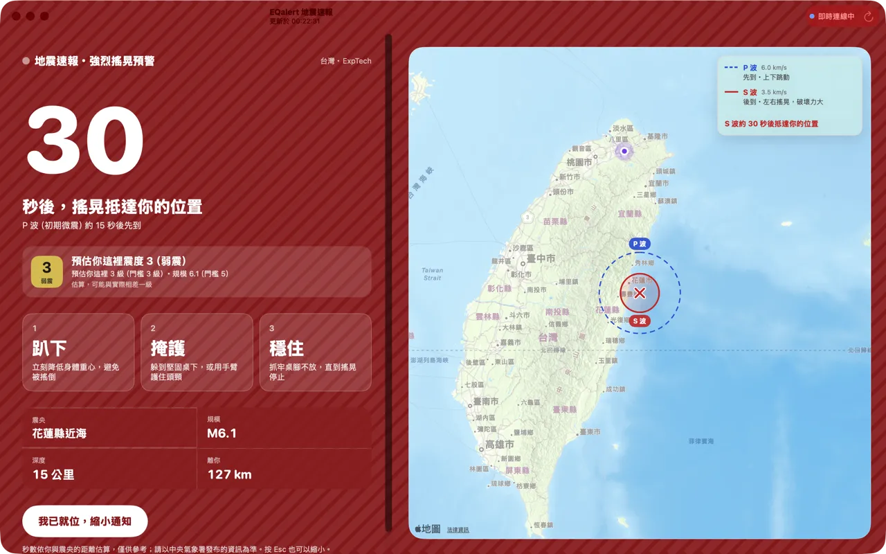
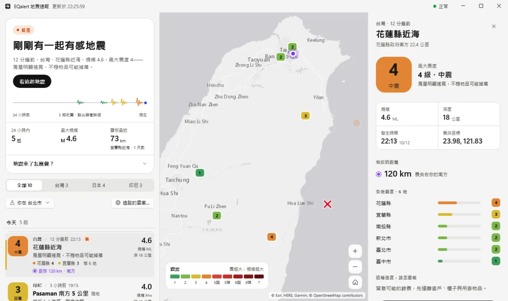
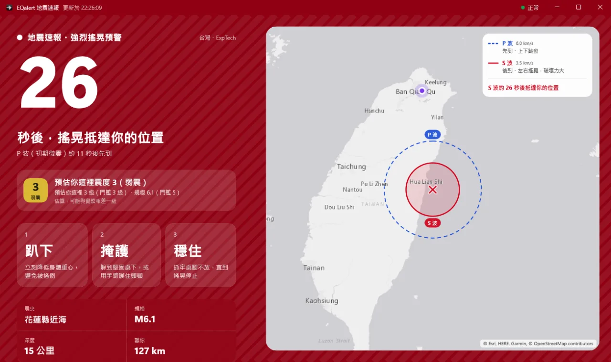

macOS・Windows・最新版 {{version}}
地震情報を、
ひと目で。
EQalert は台湾と日本の地震をリアルタイムで表示します。
初回起動時に macOS にブロックされたら？インストール方法を見る
「Windows によって PC が保護されました」と表示されたら？インストール方法を見る




01
開けばわかる
地震があったか、どこで、どのくらいの強さだったか。
-
ふだん
現在、地震速報は出ていません
今の状態がひと目でわかります。下には過去 24 時間の地震を記録紙のように表示。とがった線はすべて実際の地震で、地震がなければ平らな線のままです。
-
揺れを感じた
11 分前、花蓮県沖、最大震度 4
自分で調べる必要はありません。どこで、どのくらいの強さで、あなたからどれだけ離れているか、各地の震度、そして「家屋がはっきり揺れ、不安定な物が落ちることがある」といった、ひと目でわかる説明も表示します。
02
Mac と Windows のために
-
気になる地震だけ通知
しきい値はあなたが決めます。あなたの場所の予想震度が何以上、またはマグニチュードが何以上で通知するか。
-
見える地震波
好きな地震を選んで、P 波と S 波が震源からあなたの場所に届くまでを地図上で再生できます。
-
各地の震度がひと目で
地震を選ぶと、各地で観測された震度を地図に描きます。日本の震度は気象庁のデータをそのまま使い、公式の発表へのリンクも付けています。
-
台湾・日本
追跡する地域を選べます。選んでいない地域のデータは一切ダウンロードしません。
-
メニューバー・システムトレイに常駐
メイン画面を閉じても、Mac のメニューバーや Windows のシステムトレイで監視を続け、新しい地震があればきちんと通知します。
-
5 つの言語
繁體中文、简体中文、English、日本語、Bahasa Indonesia。画面表示がまるごと切り替わります。
位置情報はこのパソコンの外には出ません。震源までの距離と、あなたの場所の予想震度の計算にだけ使います。位置情報をオンにしたくない場合は、都市を手動で選ぶこともできます。
03
インストール
-
DMG をダウンロードして開く
EQalert {{version}} をダウンロードし、
EQalert-{{version}}.dmgを開きます。 -
EQalert を「アプリケーション」にドラッグ
開いたウインドウで、EQalert のアイコンを右側の「Applications」フォルダにドラッグします。
-
初回起動：実行を許可する
EQalert はまだ Apple の公証を受けていないため、初めて開くときに macOS がブロックします。これは正常な動作です。以下の手順を一度行えば、次からはそのまま開けます。
macOS 15 以降（Sequoia、Tahoe）
- 「アプリケーション」から EQalert を開き、「Apple は検証できませんでした⋯」と表示されたら「完了」をクリックします。
- 「システム設定」→「プライバシーとセキュリティ」を開き、下の「セキュリティ」までスクロールします。
- 「EQalert はブロックされました⋯」の横にある「このまま開く」をクリックし、パスワードを入力して、もう一度「このまま開く」をクリックします。
macOS 14 Sonoma
- 「アプリケーション」で EQalert を右クリック（または Control キーを押しながらクリック）し、「開く」を選びます。
- 表示されたダイアログで、もう一度「開く」をクリックします。
ターミナルが使えるなら：1 行で完了
xattr -dr com.apple.quarantine /Applications/EQalert.app -
通知と位置情報を許可する
通知は新しい地震のお知らせに、位置情報は震源までの距離とあなたの場所の予想震度の計算に使います。しきい値・音・言語は、あとから「設定」（⌘,）で変更できます。
-
インストーラーをダウンロードして実行
EQalert {{version}} をダウンロードし、
{{exeName}}を実行します。 -
「Windows によって PC が保護されました」：実行する
EQalert はまだコード署名を受けていないため、初回は Windows がブロックします。これは正常な動作です。「詳細情報」をクリックし、「実行」を押してください。
-
セットアップウィザードを完了する
標準では今のユーザーにだけインストールされ、管理者権限は不要です。インストール後、EQalert はシステムトレイに常駐し、Windows へのサインイン時に自動で起動します（設定でオフにできます）。
-
通知と位置情報を許可する
通知は新しい地震のお知らせに使います。位置情報は震源までの距離とあなたの場所の予想震度の計算に使うため、Windows の「設定」→「プライバシーとセキュリティ」→「位置情報」で「デスクトップ アプリが位置情報にアクセスできるようにする」をオンにしてください。位置情報をオンにしたくない場合は、都市を手動で選べます。しきい値・音・言語は、あとから「設定」（Ctrl+,）で変更できます。
04
リリース履歴
お使いのバージョンは、EQalert の「設定」のいちばん下で確認できます。